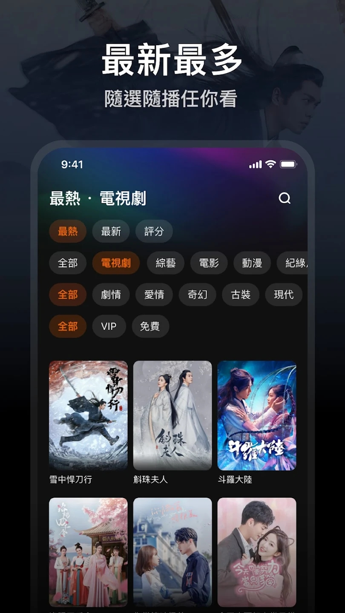

用了 WeTV 两年才发现的五个隐藏玩法，大多数人都错过了
从搜索技巧到花絮彩蛋，从卡顿急救到账号真相，五个官方没说但真的好用的冷门功能，看完你会想重新翻一遍自己的 WeTV。
你以为 WeTV 就是个打开选片点播放的海外追剧 App？在WeTV官网上滑两下首页、点个播放按钮、看不完的广告，多数人对它的认知也就到这儿了。但我翻了快两年才发现，这东西藏着好几个官方从不宣传、却能大幅提升体验的小功能——有些是真金白银省时间，有些是直接解锁了全新的追剧姿势。
搜索不只是搜剧名，还有三种搜法命中率翻倍
大多数人搜东西就是打剧名，搜不到就认了。但 WeTV 的搜索支持三种大家不知道的关键词，换一个结果天差地别。
第一种是导演名。后来翻WeTV文档才发现，官方说明里明确写了支持按导演搜，但我身边没一个人真试过。喜欢某个导演风格的人（比如喜欢看王家卫拍的、或者想看某部剧的导演还拍过什么），直接打导演名字就行，结果页里会把所有相关剧集列出来，比一个个翻分类快得多。
第二种是角色名。记不住剧名、也记不住演员名，但就是记得那个角色叫什么？没问题，直接搜角色名——不少用户反馈用角色名也能带出对应剧集，这招对那种名字翻译五花八门的泰剧韩剧特别管用。
第三种是换语言搜。中文名搜不到就试试原文名：泰剧用泰文、韩剧用韩文、华语剧简体搜不到换繁体。有时候不是这部片没上，是它在你的地区用的是另一个译名。搜的时候先确定是不是地区授权限制，再试换语言，别直接放弃。

卡顿急救三板斧，比傻等缓冲快十倍
播放中突然转圈、进度条走两步停一步——多数人的第一反应是等，等它自己好。其实三秒钟就能解决，根本不用看它自动降画质。
手动降画质是第一招。全屏控制条里找到清晰度选项，把 AUTO 或高档手动调低一档，缓冲通常立刻缓解。等它自动降可能要等十几秒，手动调一秒搞定。别担心画质差一档，在网络不稳定的时候，流畅比高清重要多了。
重启路由器是第二招。官方帮助文档居然也提到了这条——听着像客服的标准套话，但真的管用。用 Wi-Fi 时路由器断电十几秒再通电，回到应用重试，有时候缓冲就是路由器某个连接卡住了。
切换网络是第三招。Wi-Fi 卡就换移动数据测试，移动数据卡就找 Wi-Fi。两边都卡那才是应用或设备侧的问题，但多数时候是其中一边有隐藏的信号问题，换一下立刻就好。
花絮区不是垃圾桶，是等更新时的续命利器
点开一部剧的详情页，多数人只盯着中间那串集数列表，往下滑到底就走了。但详情页下方藏着一个被所有人忽略的区块——幕后花絮。
我也是追完一部周更剧才偶然发现的。正片每周更一集，等更新的间隙无聊到刷短视频，结果回头看详情页，花絮区里居然堆着二十多条没看过的幕后内容：拍摄花絮、演员采访、导演解说，还有预告片和精彩片段剪辑。有些剧的花絮内容量加起来能凑出两三集正片的时长。
三种场景真的用得上。决定入坑前，先看预告片和前两集花絮，再决定加不加看单——比直接追两集再弃剧省时间。等更新期间，花絮区是主力消遣，比刷无关短视频强多了。追完剧后，花絮当售后，很多剧的花絮比正片还好看。
有个小坑要注意：花絮里的短视频缓存规则和正片不一定一致，有些花絮内容不支持离线下载，以详情页实际按钮为准。
游客模式其实是半残状态，长期用必须登录
刚从WeTV下载装上的时候，很多人嫌麻烦不登录，以游客身份逛。但你可能不知道，游客身份砍掉的功能比你想的多得多。
看单收藏、观看历史、离线缓存、会员订阅——这四个功能全部需要登录。也就是说，游客看剧没有看单，没法收藏想追的剧；没有观看历史，看到一半退出了回来找不到上次看到第几集；没法离线缓存，出门没网就干瞪眼。会员更是想都别想。
登录后还有个容易被忽略的细节：记住注册方式。用邮箱注册的就记住邮箱，用第三方登录的就记住用的哪家。会员是跟账号走的，日后查会员状态、联系客服，都要对得上这个账号。我见过好几个人换手机后用另一种方式登录，结果发现之前的会员找不到了。
一个账号同时登几台设备？官方不说但有上限
这个不是功能，是个大家都不知道的规则——一个账号能登录的设备数量有限制，会员内容同时在线的设备数也有上限。
具体数字官方没公开，但实际使用中我试过在三台设备上同时看免费内容没问题，一旦其中一台开了会员内容，其他设备的会员播放就会被挤掉。家里人共用一个账号的要注意了：如果有人在看会员内容，你这边可能突然被踢回游客模式，别慌，等那边看完你再试就行。
最后说个容易踩的坑
WeTV 和国内版腾讯视频账号完全不隔离——你在国内版用了多年的账号，到了这里登录，看单、历史、收藏全是空的，就像一个全新账号。不是登录出错，是真的不互通。反过来在 WeTV 充了会员，到国内版也用不了。两个平台，两个账号体系，别搞混了。
这些功能官方没在首页推过、没在新用户引导里提过，但都是实实在在能提升体验的小技巧。WeTV 本质上不是什么复杂的东西，但把这些细节用好，追起剧来会顺畅很多。把它用透，别只用它来点播放。
这套资料我在GitHub、Gitee 和GitCode三个仓库都放了一份，跨平台用户随便挑哪个方便看，毕竟海外网络环境不稳定，多几个备份总不是坏事。